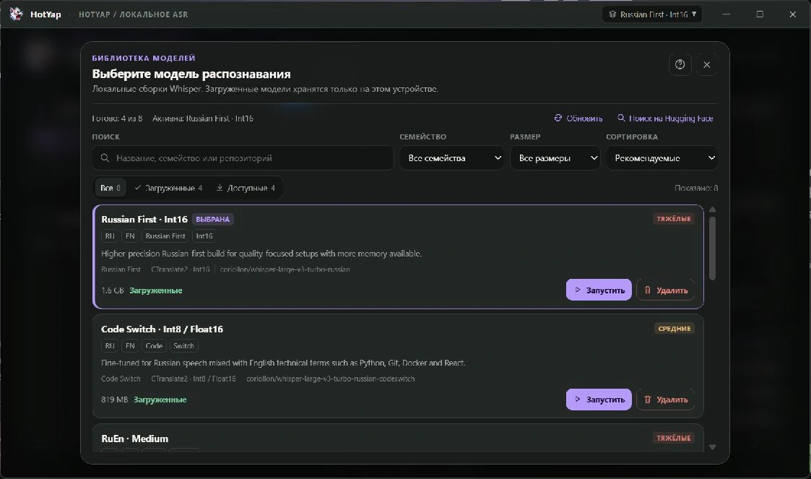

RU + EN
Два языка. Одна мысль.
Диктуйте по-русски с английскими терминами. Контекст распознавания помогает сохранять TypeScript, Docker и useEffect в латинице.
РУССКИЙ + ENGLISH / ГОЛОСОВОЙ ВВОД
Русская речь. Английские технические термины. Диктуйте задачи, сообщения и промпты — HotYap помогает сохранить язык вашего стека в расшифровке.
 LOCAL FIRST — YOUR DESKTOP
LOCAL FIRST — YOUR DESKTOP
«Проверь useEffect и обнови Docker-контейнер»
01 / ЗНАКОМЫЙ ЯЗЫК. НОВЫЙ СПОСОБ.
RU + EN
Диктуйте по-русски с английскими терминами. Контекст распознавания помогает сохранять TypeScript, Docker и useEffect в латинице.
LOCAL
В локальном режиме речь распознаётся на вашем компьютере. Без истории записей и телеметрии.
PUSH TO TALK
Начните запись горячей клавишей. Результат попадёт в буфер обмена — для сообщения, документа или редактора.
02 / КРАТКАЯ ИНСТРУКЦИЯ
Один раз подготовьте локальный движок, модель и микрофон. Потом достаточно горячей клавиши.
Выбрать установщик ↗Скачайте установщик для своей системы и откройте HotYap. В блоке «Движок» нажмите «Установить / обновить движок», если эта кнопка показана.
Для первой загрузки нужен интернет. Движок и модель скачиваются отдельно.

Откройте «Модели» → выберите модель → «Загрузить». После скачивания нажмите «Запустить» и дождитесь статуса «Готов» в блоке «Движок».
Для короткой первой проверки можно выбрать RuEn · Tiny (78 МБ). Более крупные модели требуют больше памяти.

Откройте «Настройки» → «Микрофон и звук». Оставьте системный микрофон или выберите нужный. Нажмите «Начать тест», скажите пару слов и проверьте индикатор. Сохраните настройки.
Тест длится до 15 секунд. Аудио теста не отправляется на распознавание.

Удерживайте Ctrl + Shift + Space, говорите и отпустите клавиши. Дождитесь расшифровки и надписи «Скопировано в буфер обмена». Вставьте текст: Ctrl + V или ⌘ + V на Mac.
Можно удерживать кнопку записи в HotYap. Горячая клавиша меняется в блоке «Диктовка».

В «Настройки → Диктовка и вставка» включите «Распознавать во время речи» и «Показывать предпросмотр диктовки». Черновик и пунктуация могут измениться в конце.
Там же включите «Вставлять в активное приложение». Запускайте диктовку горячей клавишей из нужного поля и не меняйте фокус. Если вставка недоступна, используйте буфер обмена.
Откройте «Словарь»: добавьте, как слово звучит и как его нужно писать. Для терминов конкретного проекта создайте отдельный словарь и выберите проект перед записью.
INSIDE HOT/YAP · ALPHA.18
Шесть сценариев, два оформления и настройки, которые подстраиваются под вас.

Тёмная · янтарь
Локальная модель обрабатывает фразы во время речи. Включите предпросмотр и выберите полную финальную обработку или быстрое завершение.

Личная лексика
Имена и технические термины записываются как нужно вам. Добавляйте замены вручную, проверяйте предложения из ваших правок или включите автообучение.

Добавление после проверки
Переключайте словари под задачу. Проверяйте термины, найденные в исходниках, перед добавлением. Правила проекта важнее личных замен.

Светлая · синий
Выберите системный или конкретный микрофон и проверьте сигнал локально. Звук системы можно оставить, приглушить или отключить на время диктовки.

Автоматизация по желанию
Настройте предпросмотр, финальную обработку и вставку в исходное активное приложение. Если вставка недоступна, текст остаётся в буфере обмена.

Светлая · синий
Светлая и тёмная темы, шесть акцентных цветов и привычный рабочий процесс. Настройте приложение так, чтобы в нём было удобно каждый день.
Настоящий интерфейс с демонстрационными данными. Текст предпросмотра уточняется после завершения записи.
04 / КОНТРОЛЬ НА ВАШЕЙ СТОРОНЕ
Выберите модель под свой компьютер и задачи. Загружайте её и управляйте ей прямо в HotYap.

Перед началом
Да. Сначала установите движок и загрузите локальную модель, затем распознавайте речь без подключения к интернету. Облачное распознавание и внешняя обработка текста требуют доступа к выбранному провайдеру.
Нет. Локальные модели работают и на CPU. Совместимая видеокарта NVIDIA с CUDA может ускорить распознавание. Скорость зависит от оборудования и выбранной модели.
Аудио отправляется при выборе облачного распознавания. Если включить внешнюю постобработку текста, расшифровка также отправляется её провайдеру. Обе функции необязательны; API-ключи хранятся в системном хранилище учётных данных.
Установщики пока не подписаны. Основная проверенная платформа — Linux; сборкам Windows и macOS требуется более широкое тестирование. В Linux на Wayland используйте кнопку записи, если глобальная горячая клавиша недоступна.
Готовы начать?
Установите HotYap, загрузите модель и попробуйте первую диктовку.
Выбрать установщик ↗Alpha.18 · Windows, macOS, Linux · Установщики пока не подписаны
Основная проверенная платформа — Linux. Сборки Windows и macOS доступны для раннего тестирования.